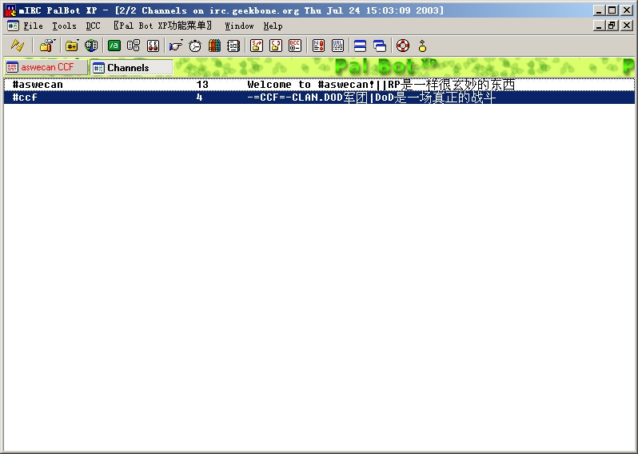

上IRC可以使用PalBot 点击下载 此Bot已经设置好，可以马上使用。在"连接到服务器"对话框中找到 "irc.aswecan.net" 选中，然后按"连接"按钮接入服务器。
1.将PalBotXP压缩包解开到一个目录中。
2.执行Palbot.exe出现PalbotXP的界面。
3.出现，连接到服务器对话框，不要理他，按关闭。然后，到File－Options... （或者按Alt+o）
4.进入，Options对话框 。找到Connect。
将 "Full Name:"（全名） "Email Address:"（email地址）
"Nickname:"（irc上用的名字） "Alternative: "（备用名字）改为自己的资料。
5.然后，按右上角的Add按钮，
6.进入Add Server对话框。在"Description:" 填写"irc.aswecan.net"；"IRC
Server:"填写"irc.aswecan.net"；
"Port(s)"填写6667 ；"Group:"填写aswecan。接着，按Add按钮，把服务器添加进服务器列表。
7.大家回到mIRC Options 对话框。看到irc.aswecan.net在服务器列表里面了。
点击Connect to IRC Server,连接上服务器。
8.现在我们已经连接上服务器了。在下放的命令输入条中输入/list 按回车。
出现Channels窗口。可以在快捷图标下的窗口栏上看到
9.看到#ccf了没有(irc上的每个房间都用"#"开头表示房间)？Channels里面列出来的是服务器上所有的房间。
在#ccf这一行上双击就可进入CCF的讨论房间，#ccf了。

10.现在我们就可以参与讨论了。如果我们重新启动PalBot后可以在连接到服务器对话框里中找到irc.aswecan.net.
|